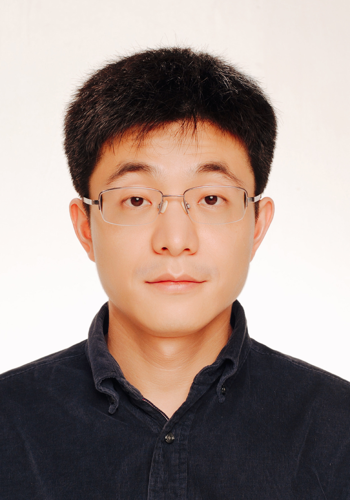
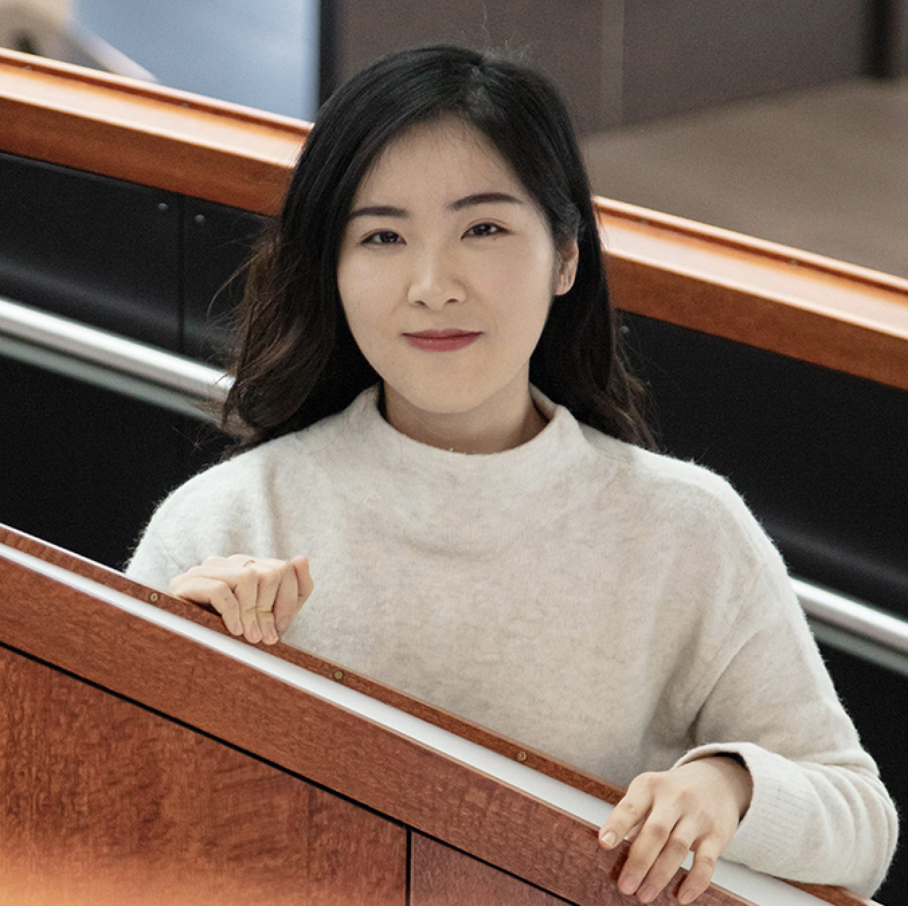

|  |
Yu Guang Wang |
||
Institute of Natural Sciences School of Mathematical Sciences Shanghai Jiao Tong University Artificial Intelligence Biomedicine Center Zhangjiang Institute for Advanced Study Shanghai Jiao Tong University |
yuguang.wang@sjtu.edu.cn 361, Build. No.6, Science Buildings No. 800 Dongchuan Road, Minhang District Shanghai 200240, China |
I am an Associate Professor in Institute of Natural Sciences, School of Mathematical Sciences, Department of Computer Science and Engineering, and AI Biomedicine Center of Zhangjiang Institute for Advanced Study, and Key Lab of Scientific and Engineering Computing of Minister of Education (MOE-LSC), at Shanghai Jiao Tong University. I am also a research scientist of Shanghai AI Lab, and an adjunct lecturer at UNSW Sydney. My research interests lie in artificial intelligence, computational mathematics, statistics and data science. In particular, I am working on geometric deep learning, graph neural networks, applied harmonic analysis, Bayesian inference, information geometry, numerical analysis, and applications to biomedicine. Previously, I was a research scientist at Max Planck Institute for Mathematics in Sciences, in Prof Guido Montufar's Deep Learning Theory Group. I obtained my PhD in applied mathematics from University of New South Wales under supervision of Prof Ian Sloan and Rob Womersley. I am a recipient of ICERM Semester Postdoctoral Fellowship of Brown University (2018), a long-term IPAM visitor of UCLA (2019), and long-term visitor of AI Group of Prof Pietro Lio at Univeristy of Cambridge (2022).
Current Research Interests |
|---|
|
| List of publications can be found at my Google Scholar. |
Researcher |
|
|  | |
|---|---|
Master |
|
Undergraduate |
|
PhD |
|
|---|---|
Alumni |
| • | AI Group Seminar, |
|
| • | Distinguished Lectures and INS Colloquia, |
|
| • | AI + Math Colloquia, |
|
| • | Deep Learning Theory & Math Machine Learning Seminar, |
|
| • | Machine Learning + X Seminars, |
|
| • | M2D2: Molecular Modeling And
Drug Discovery, |
|
| • | FoCM Online Seminar Series, |
| • | Machine Learning + X Seminars, |
|
| • | Workshop on Combinatorics and Information Transfer, |
|
| • | ELLIS Machine Learning for Molecule Discovery Workshop, |
|
| • | NeurIPS MeetUp China, |
|
| • | NeurIPS, |
|
| • | Deep learning and partial differential equations, |
|
| • | Geometry & Learning from Data Workshop, |
|
| • | International Conference on
Computational Harmonic Analysis, |
|
| • | Theory of Deep Learning, |
|
| • | Conference on Mathematics of Machine Learning, |
|
| • | TopoNets 2021 - Networks beyond pairwise interactions, |
|
| • | AI Group Seminar, |
|
| • | ICLR Workshop on Geometric and Topological Representation Learning, Online, 7 May 2021. | |
| • | ICLR'21, Online, 3-7 May 2021. | |
| • | AIM: Artificial Intelligence and Mathematics, |
|
| • | Topological Data Analysis, Online, 26-30 April 2021. | |
| • | Business Analytics Seminar, |
Guest Associate Editor for Research Topic Implementation of AI and Machine Learning Technologies in Medicine jointly in three journals
Guest Associate Editor for Special Issue Deep Neural Networks for Graphs: Theory, Models, Algorithms and Applications in
Review Editor for the journal Frontiers in Applied Mathematics and Statistics.
Reviewer for ICML'20 (Top Reviewer), ICML'21, NeurIPS'20, NeurIPS'21, ICLR'21, ICLR'22, IJCAI'21.
Organiser for Collaborate@ICERM on Geometry of Data and Networks, 2019 joint with Joan Bruna
Organiser for Minisymposium on Harmonic Analysis for Graph Signal Processing and Deep Learning Applications in
I am lecturing the following courses in 2021-2022.
| 2021 Fall,
|
||
| 2022 Spring,
|
||
| 2022 Spring,
|
I was a class tutor in UNSW for following courses.
| Semester 3 2019, MATH3101/5305 Computational Mathematics (Numerical Methods for PDEs) | ||
| Semester 2 2018, MATH2089 Numerical Methods and Statistics | ||
| Semester 1 2015, MATH1131 Mathematics 1A | ||
| Semester 2 2014, MATH1231 Mathematics 1B, MATH1241 Higher Mathematics 1B, MATH2019 Engineering Mathematics 2E |
| Yi Guo, 2018-2019, UNSW, thesis title: Cosmo-Encoder: A Bayesian deep learning approach for cosmic microwave background inpainting | ||
| Kai Yi, 2018-2019 UNSW, thesis title: Variational autoencoder for cosmic microwave background image inpainting (Current: PhD in UNSW) |
I am grateful for the financial support of the following institutions:
| Copyright @ 2022 Yu Guang Wang | Top |